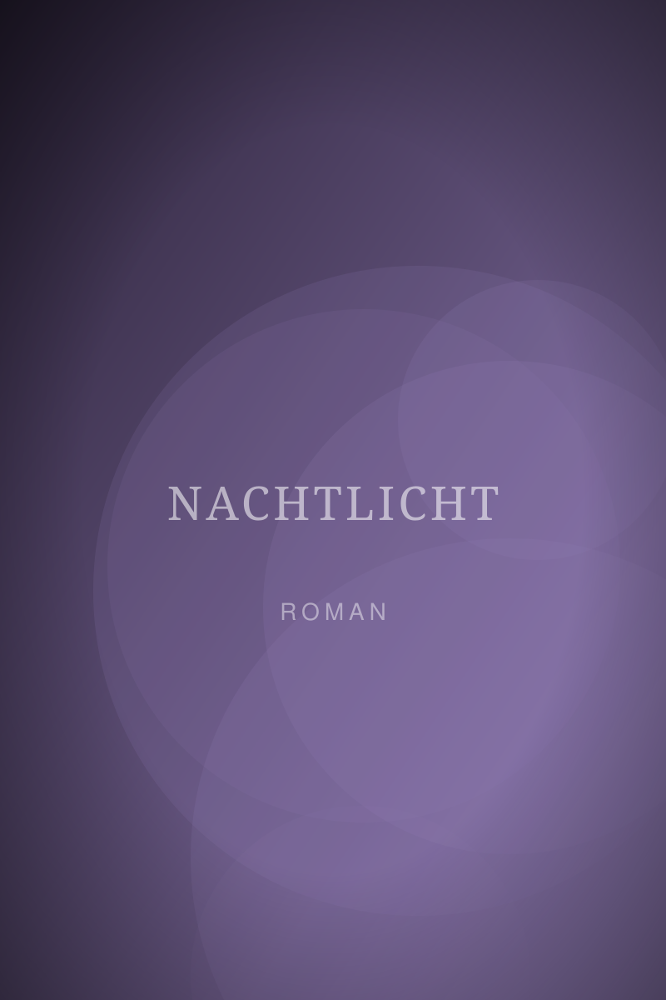
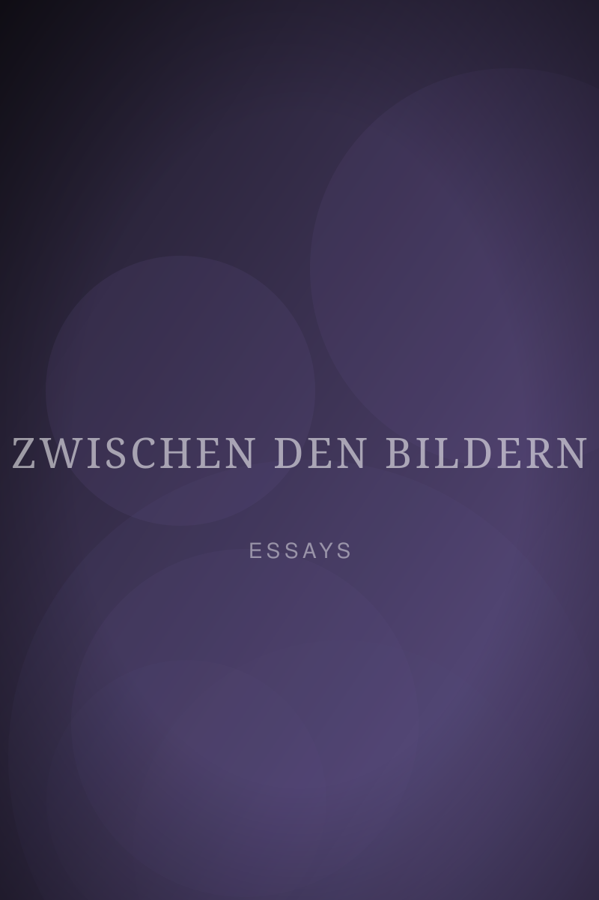
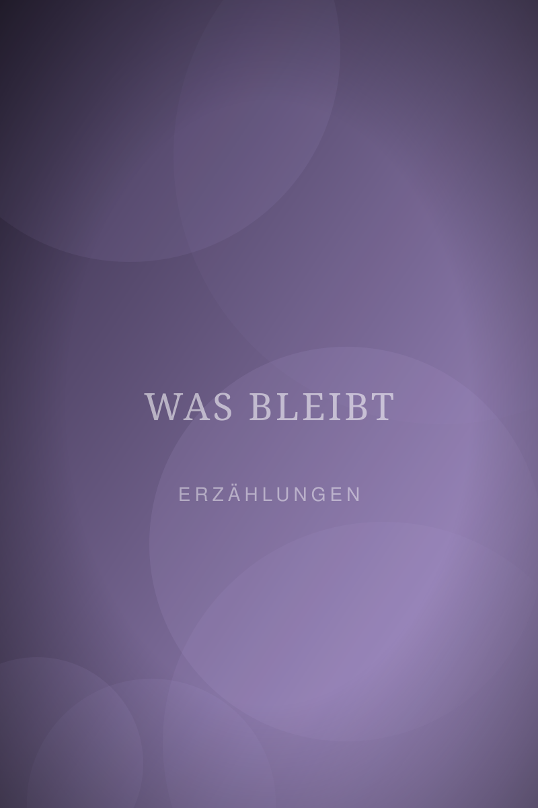

Nachtlicht
Eine Fotografin kehrt in die Kleinstadt ihrer Kindheit zurück, um ein Archiv zu retten, und findet darin ein Bild, das es nicht geben dürfte.
Signiert bestellenDrei Bücher, ein Dutzend Essays, unzählige Kolumnen. Ich schreibe über das Sehen, das Verschwinden und Menschen, die beides üben.

Eine Fotografin kehrt in die Kleinstadt ihrer Kindheit zurück, um ein Archiv zu retten, und findet darin ein Bild, das es nicht geben dürfte.
Signiert bestellen
Vierzehn Texte über das Sehen, das Warten und die Frage, was ein Foto verschweigt. Mit 30 eigenen Fotografien.
Signiert bestellen
Neun Geschichten über Abschiede, die niemand bemerkt hat. Ausgezeichnet mit dem Leipziger Nachwuchspreis für Prosa.
Signiert bestellen„Sie hatte gelernt, dass man ein Bild nicht macht. Man wartet, bis es einen findet, und drückt dann ab, bevor es sich wieder umdreht. Mit Menschen, dachte sie, war es ähnlich.“
Manuskripte, Sachbücher, Erzählungen. Ich lese genau, hinterfrage Struktur und Ton und sage, was ich wirklich denke. Respektvoll, aber ehrlich.
PreiseWebsite-Texte, Reportagen, Portraits, Künstlerbiografien und Ausstellungstexte. Wenn gewünscht mit eigenen Fotografien.
PreiseLesungen aus meinen Büchern, Werkstattgespräche über Bild und Text sowie Schreibworkshops für Fotografinnen und Fotografen.
AnfragenLesung aus „Nachtlicht“ im Haus des Buches, 19:30 Uhr. Eintritt frei, Anmeldung erwünscht.
Jetzt anfragen